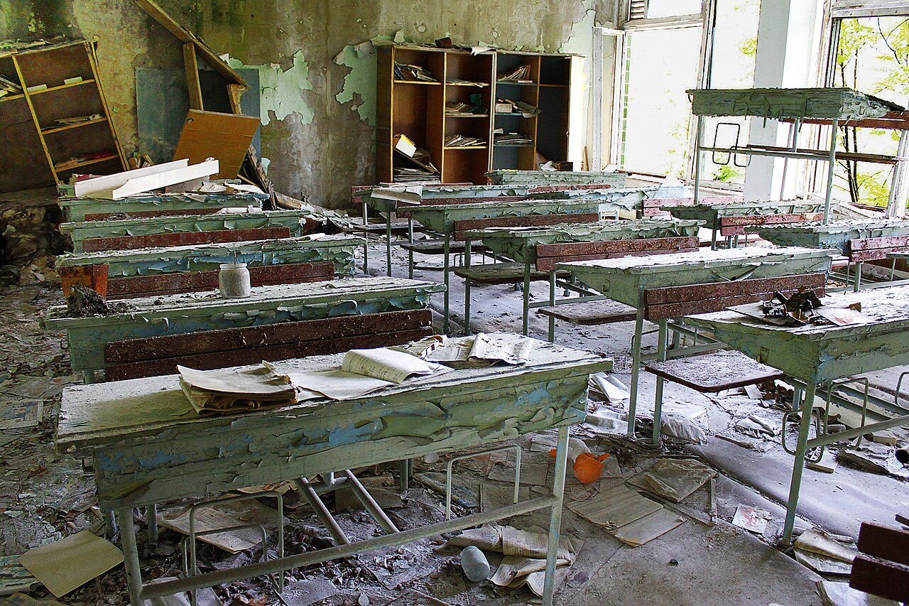
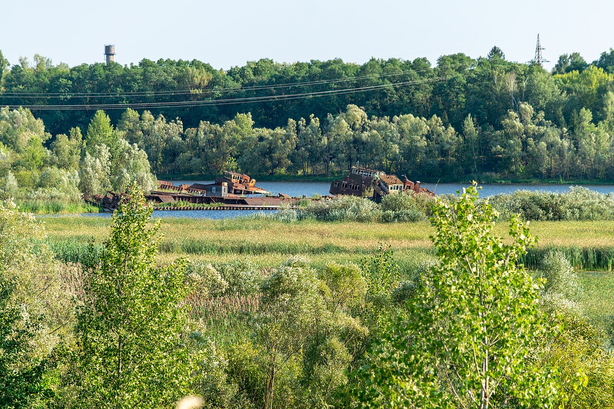

Sergei Sedov: letters from his mother
Sergei wrote home every Sunday. In his final letter he asked his mother not to sell his father’s watch: he would return and take it for repairs himself. Two blank…
Read entryLetters from those outside the Perimeter. Diaries from those who entered the Zone.

Sergei wrote home every Sunday. In his final letter he asked his mother not to sell his father’s watch: he would return and take it for repairs himself. Two blank…
Read entryAnton left after losing his job, giving his sister a room key and a note saying he would not be long. A month later a diary appeared under his old nickname. She…
Read entry
The friends left together, telling their families they had warehouse work. After they disappeared, an acquaintance brought back one backpack, saying the other had been…
Read entryVera’s husband sent short recordings from borrowed PDAs. The final voice file ended with a knock at a door. Her reply to the sender’s address was never delivered. She…
Read entryA nephew found a notebook bearing his uncle’s name in a second-hand shop. Half the entries list ordinary expenses: bread, batteries, bandages. Then the same sums repeat…
Read entryAvoid publishing private family details that a stranger could use to impersonate the missing person. Keep the original message, date and intermediary’s name. Compare…
Read entryThe envelope arrived with a bag of old parts: a familiar name on the paper, an unanswered number on the reverse. The family kept it intact, including the postmark. They…
Read entryA man counts footsteps on the tape and asks whether it is recording. His daughter recognises the voice but neither the place nor the time. She asks for original…
Read entry